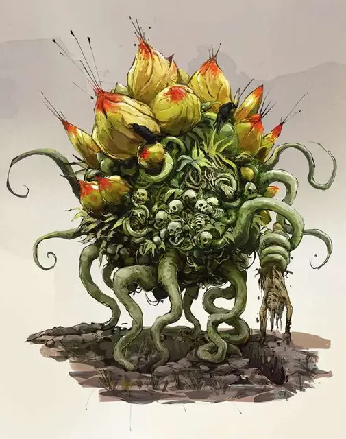

Трупоцвет
Corpse Flower
Большое Растение, хаотично-злое

Класс Доспеха 12
Хиты 127 (15к10 + 45)
Скорость 20 футов, лазая 20 футов
| мод | спас | ||
|---|---|---|---|
| СИЛ | 14 | +2 | +2 |
| ЛОВ | 14 | +2 | +2 |
| ТЕЛ | 16 | +3 | +3 |
| мод | спас | ||
|---|---|---|---|
| ИНТ | 7 | −2 | −2 |
| МДР | 15 | +2 | +2 |
| ХАР | 3 | −4 | −4 |
Иммунитет к состояниям ослепление, глухота
Чувства тёмное зрение 120 футов (слеп за пределами этого радиуса), пассивное Восприятие 12
Опасность 8 (3900 опыта)
Бонус мастерства +3
Среда обитания Болото, Город, Лес
Особенности
Трупы. При первой встрече трупоцвет несёт в себе 1к6+3 трупа гуманоидов. В то же время трупоцвет может содержать в себе до девяти трупов гуманоидов. Они имеют полное укрытие от атак и прочих эффектов, направленных на них из-за пределов цветка. Если трупный цветок погибает, трупы выбрасываются наружу.
Пока в трупном цветке находится хотя бы одно мёртвое тело, он может бонусным действием совершать одну опцию из приведённых ниже:
• Трупный цветок переваривает один труп и мгновенно восстанавливает 11 (2к10) хитов, не оставляя ничего от переваренного тела. Любое снаряжение переваренного трупа выбрасывается в занимаемое цветком пространство.
• Трупный цветок оживляет одного мёртвого гуманоида, превращая его в зомби. Зомби появляется в свободном пространстве в пределах 5 футов от трупного цветка и незамедлительно ходит после него в порядке инициативы. Зомби действует как союзник цветка, но не находится под его контролем, а также он источает смрад, которым он пропитался (см. Зловоние смерти ниже).
Паучье лазанье. Трупный цветок может карабкаться по сложным поверхностям, включая вверх ногами по потолку, без необходимости проходить какие-то проверки.
Зловоние смерти. Каждое существо, начинающее свой ход в пределах 10 футов от трупного цветка или от его зомби должно совершить спасбросок Телосложения Сл 14, если оно не является конструктом или нежитью. В случае провала существо становится Недееспособным до конца хода. Существа, иммунные к урону ядом, автоматически преуспевают в этом спасброске. В случае успеха существо становится иммунным к зловонию на следующие 24 часа.
Действия
Мультиатака. Трупный цветок совершает три атаки Щупальцем.
Щупальце. Рукопашная атака оружием: +5 к попаданию, досягаемость 10 футов, одна цель. Попадание: 9 (2к6 + 2) дробящего урона, и цель должна преуспеть в спасброске Телосложения Сл 14 или получить 14 (4к6) урона ядом.
Урожай мёртвых. Трупный цветок хватает один неохраняемый труп гуманоида в пределах 10 футов и помещает его в себя вместе со всем снаряжением которое носил или нёс труп. Этот труп можно использовать для навыков трупного цветка.
Описание
Трупоцвет может вырасти на могиле злого некроманта или на останках мощной нежити. Если его не выкорчевать и не сжечь, пока трупоцвет ещё является ростком, он разрастётся до огромных размеров в течение нескольких недель, чтобы после этого покинуть место произрастания и отправиться очищать поля битв и кладбища от трупов гуманоидов.
Используя свои волокнистые щупальца, он наполняет останками своё тело и питается падалью для самовосстановления. Это растение обладает злобными наклонностями и презрением к живым.
Ужасный аромат. С или без трупов гуманоидов, находящихся в его теле, трупоцвет выделяет гнилостное зловоние, которое может переполнять чувства окружающих, вызывая у них тошноту.
Зловоние, служащее защитным механизмом, исчезает через 2к4 дня после того, как трупный цветок погибает. Ростки трупоцвета очень полезны для различных целей. Просто убейте и похороните некроманта, и примерно через неделю у вас будет отличный урожай.